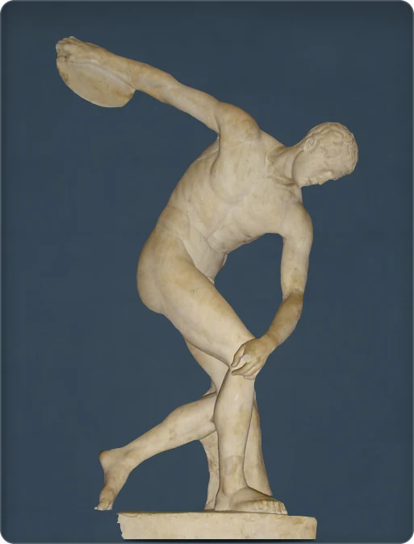

← Back to the collection
Discobolus

The moment before the throw
The athlete pauses just before releasing his discus. This Roman marble copy follows a lost Greek bronze attributed to Myron in the fifth century BCE. His bent torso and sweeping arm hold the movement in balance. The head was incorrectly positioned during restoration: it should turn towards the discus.
2nd century CE · marble · British Museum, London · inv. 1805,0703.43
Record: British Museum →
Additional source: Cambridge Museum of Classical Archaeology
Photo credit
Photo: Valerio Perticone / Wikimedia Commons · CC BY-SA 3.0 · background edited
Modified image licence: CC BY-SA 3.0